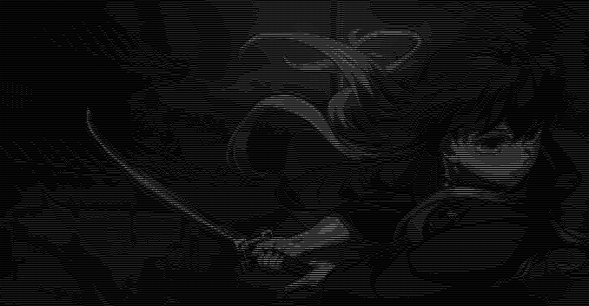

CodewithSarthak
Home
Github
Contact
Hello, I'm
Sarthak
Frontend Developer | Tech Enthusiast | Digital Minimalist
Explore My Github

About Me
👤
Name:
Sarthak aka Saro
🎓
Education:
High school student, currently learning CS50x
💻
Tech Stack:
Proficient in HTML, CSS, JavaScript, and Python
🌐
Web Development:
Passionate frontend developer with experience in building responsive and accessible web applications
🎮
Interests:
Casual Gamer and Arch Linux user; enjoys developing Linux scripts
📂
GitHub Projects:
Creator of projects like Task_Manager SimpleWebCalculator, SimplePassGenerator, and Tic-Tac-Toe
✨
Current Projects:
Working on a Task management script which uses Python and My Site
💡
Learning Philosophy:
Committed to continuous learning and skill improvement
🎨
Aesthetics:
Prefers a minimalistic design with a beautiful theme
📱
Social Media:
Active on GitHub as
codewithsarthak-2009
"La vita è bella" – Life is beautiful.